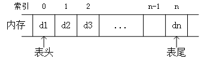

List
this page shows the structure and implementation of List, including sequence list/link list.
数据结构入门
推荐使用《数据结构》严蔚敏 清华大学出版社 传送门：http://product.dangdang.com/22601051.html，一星期看一章节，2-3个月就学完了。

图1：线性表的顺式实现

图2：线性表的链式实现
线性表的顺式实现：
#include
#include
#define Size 4
typedef struct List {
int * head;//声明了一个名为head的长度不确定的数组，也叫“动态数组”
int length;//记录当前顺序表的长度
int size;//记录顺序表分配的存储容量
}SeqList;
SeqList initSeqList() {
SeqList t;
t.head = (int*)malloc(Size*sizeof(int));
if (!t.head) {
printf("初始化失败");
exit(0);
}
t.length = 0;
t.size = Size;
return t;
}
int listGet(SeqList t, int i) {
if (i < 0 || i > t.length-1) {
printf("参数非法");
return NULL;
}else{
return t.head[i];
}
}
SeqList listInsert(SeqList t, int i, int e) {
if (i < 0 || i > t.length) {
printf("插入位置有问题");
return t;
}
if (t.length == t.size) {
t.head = (int) realloc(t.head, (t.size+1)*sizeof(int));//改变head指向的内存空间大小
if (!t.head) {
printf("存储分配失败");
return t;
}
t.size++;
}
for (int j = t.length - 1; j >= i; j--) {//逐个后移
t.head[j + 1] = t.head[j];
}
t.head[i] = e;
t.length++;
return t;
}
SeqList listDelete(SeqList t, int i) {
if (t.length == 0) {
printf("顺序表已空");
return t;
}
else if (i < 0 || i > t.length-1) {
printf("删除位置有问题");
return t;
}
else {
for (int j = i; j < t.length-1; j++) {//逐个前移
t.head[j] = t.head[j + 1];
}
t.length--;
return t;
}
}
void displaySeqList(SeqList t) {
for (int i = 0; i
线性表的链式实现：